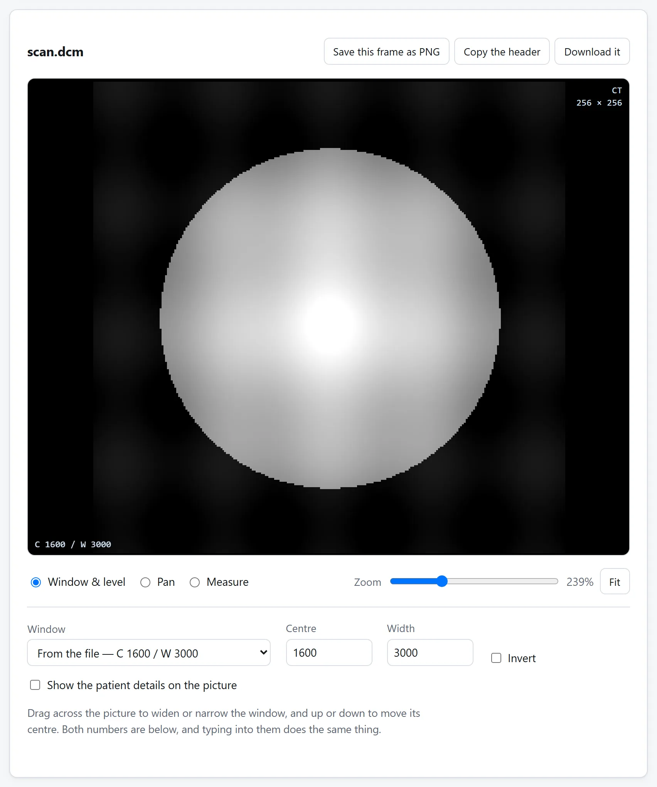
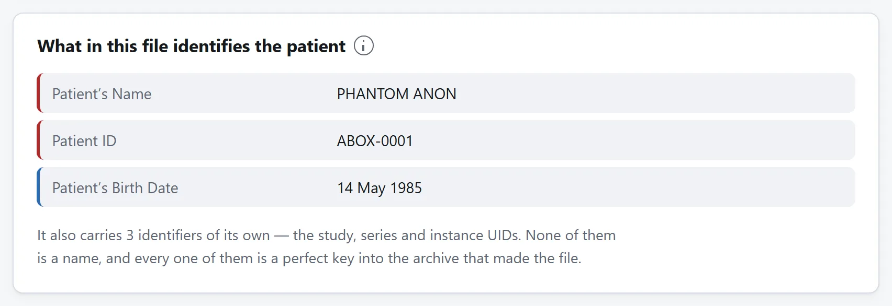

先说结论
打开 DICOM 阅片器，把 .dcm 文件拖进去，或者把整个装着这些文件的文件夹拖进去。它们会在你自己的机器上读出来，各自归回原来的序列，并按设备拍摄的顺序叠好。什么都不会上传，也不会往你的文件里写回任何东西。
要是你拿到一张光盘，正犹豫该开哪个文件：全部，一次性。一次 CT 或者 MR 不是一个文件，是一层一个文件，一次胸部检查就是三百来个。
检查光盘，或排查阅读器拒收
核对收到的资料。打开扫描文件夹，检查研究和序列描述是否符合预期检查，用切片控件浏览。文件似有缺失或编码不支持就问影像机构；本地浏览不能证明研究完整或解释结果。
兼容性排查。先读头部 Transfer Syntax 和不支持编码报告，别急着改名或判断损坏。图像解不开，头部仍可能可读。客服请求只分享必要技术信息，不发完整带患者信息的头部。
教学可用已经批准并去标识的数据集，本查看器不匿名化。DICOM 保密配置说明只去姓名为何不够。
DCM 文件是什么，用什么打开
以 .dcm 结尾的文件就是 DICOM 文件，也就是每一台医学影像设备写出来的格式，这三个字母只是它通常用的后缀。在一台从没装过医学阅片软件的电脑上双击它，系统会问你用什么程序打开，因为机器自带的东西里没有一个登记过要开它。看图软件不行。里面的像素不是换了名字的 JPEG，它们有十二位或十六位深，而且得先读头信息，才知道这幅图有多宽。
所以大家搜的「DCM 文件打开工具」，其实就是 DICOM 阅片器，一共三种。光盘上带的那个程序，如果它还跑得起来。一个要安装的桌面阅片器，对每周都看影像的人来说是正解，对手里只有一张光盘的人来说太折腾。还有网页，而网页又分两类，看上去一模一样：一类把你的文件传到服务器，再发一张图回来；一类就在浏览器里读。分辨的办法是先把页面加载好，断开网络，再打开文件。只有第二类这时还能用。
医院给的光盘里都有什么
通常是四样，而只有一样要紧。
- 一个装着影像的文件夹，名字常常是
DICOM、IMAGES或者ST0001，里面的文件叫IM000001、I0000001，或者一长串带点的数字。很多时候压根没有后缀。这就是影像。 - 一个叫
DICOMDIR的文件，是其余部分的索引，写出来是为了让阅片器不必逐个打开就能列出光盘上的检查。你用不着它。 - 一个阅片器，可能是 Windows 的可执行文件、一条自动运行项，偶尔是个 Java 小程序。它是照着刻盘那会儿的环境编译的，所以那么多都已经跑不起来了。
- 一个带医院标志的 HTML 页面或者 PDF，讲怎么启动那个阅片器。
影像并不需要那个阅片器。这个格式是公开的标准，文件自己就读得了；光盘上那个可执行文件只是能读它们的一个程序，不是唯一的一个。
文件为什么没有后缀
因为 DICOM 不需要。每个文件都自带标记：128 个字节的空白，然后是 DICM 这四个字母，再然后是一小块字段，说明这个文件其余部分是怎么写的。读的一方查的是那四个字母，不是以 .dcm 结尾的名字。
这也是为什么把文件名改成 .dcm 什么也改变不了，以及为什么一个非要后缀的阅片器是在没必要地较劲。直接从医院网络里写出来的文件，连那 128 个字节和那个标记都没有，就是前面什么都不加的裸数据，读的一方得从它的第一个元素推断出编码方式。那是正常文件，不是坏文件。
窗宽窗位，这才是要紧的那个操作
这是让一张医学影像不同于一张照片的唯一一件事，也是图像编辑软件不适合看它的原因。
一层 CT 里大约有四千个不同的数值，你的屏幕只能显示两百五十六级灰。总得有什么来决定这四千里哪一些落到那两百五十六里，这个决定就是窗。比它低的全黑，比它高的全白，中间那一段铺满灰阶。
挪一下窗，同一个文件看着就像另一次检查。这不是渲染出了毛病，这正是关键。肺和骨都在同一层里，却没法同时看清：一个能看出充气肺纹理的窗，会把所有骨头变成纯白；一个能看清肋骨骨小梁的窗，会把整个肺变成纯黑。
CT 上的数值是亨氏单位，是绝对定义的，不是每台机器各算各的：水是 0，空气是 −1000，全世界每一台 CT 都如此。所以阅片器才能给出带名字的窗，肺窗、骨窗、脑窗、软组织窗，而且它们在你的文件上跟在那台出报告的工作站上是同一个意思。常用的几个是：
- 软组织窗 | 窗位 40，窗宽 400。
- 肺窗 | 窗位 −600，窗宽 1500。
- 骨窗 | 窗位 300，窗宽 1500。
- 脑窗 | 窗位 40，窗宽 80。这个窗很窄，因为灰质和白质只差几个单位。
MR 上没有这样的标度。数值取决于序列、线圈和机器，所以没有什么可以拿来给预设起名字，一开始用的窗就是文件自己要求的那个。每一份影像都带着一个建议。

为什么有时候翻层的方向是反的
阅片器得决定把这些文件按什么顺序排，而文件里有两样东西可以用。
Instance Number 是一个计数。这是最顺手的选择，可它是由写这些文件的东西分配的，没有理由按病人躺着的方向去编号。一次从脚往上重建、却从头往下编号的检查，翻起来就是倒的；而由两次重建拼起来的一套序列，编号甚至可能直接重复。
Image Position (Patient) 说的是这一层实际在什么位置，单位是毫米，而且用的坐标系是钉在病人身上的，不是钉在机器上的。不管编号做了什么，按它排都是对的，而且还有个有用的副产品：一旦层按物理位置排好了，层与层之间的距离就量得出来，于是阅片器可以告诉你层间距是 5 mm，也能发现少了一层，而这件事文件本身从来不说。
量点什么
影像是量出来的数据，所以在它上面量出的长度是真实长度，前提是文件写了像素之间隔多远。写这个的只有一个字段，Pixel Spacing，单位毫米，几乎每一次 CT 和 MR 都有。
超声图像、扫描件，还有存成 DICOM 的屏幕截图，常常没有这一项。没有的时候，毫米这个答案就不存在诚实的版本，而一个照样给出毫米的阅片器是自己编了一个比例。像素数是对一个文件回答不了的问题给出的正确答案。
也要留意不是正方形的像素，这在 CT 之外很常见。按像素量再乘一个间距，只有在两个方向相等时才对，每个方向都得用自己的那个数。
一份影像除了图像还带着什么
这是人们弄错的地方，也是对这类文件要小心的理由。
DICOM 文件不是加了元数据的图片，是装着图片的病历。头信息是一串字段，在一次寻常的临床影像上，里面装着：
- 病人的姓名、住院号、出生日期和性别；
- 检查号，也就是在医院系统里回到那张申请单的钥匙；
- 开单医生、拍片技师、出报告的放射科医生；
- 机构、机构地址和科室；
- 设备的厂商、型号和序列号；
- 精确到秒的检查日期和时间；
- 以及检查、序列、实例的那几个唯一标识符，它们是回到出片档案库的完美钥匙。
你拿到的任何一个文件都带着这全部，而且文件走到哪里它们就跟到哪里。删掉姓名是不够的：一个出生日期、一个邮编大小范围内的机构，加上一个检查时间，认出一个人的本事跟姓名差不多；而检查的 UID，对任何能进那个档案库的人来说，指认得分毫不差。
有些设备还会把病人姓名的第二份副本放进一个私有字段。那种字段的含义没有在任何地方公开过，而多数匿名化工具根本不动它，因为它们无从知道里面装着什么。

别为了看一眼就把影像传上去
这件事通常是这么解决的：搜一下「dicom viewer online」，然后找到一个上传框。而那一刻刚刚发生的事情是，一个陌生人手里有了一份病历的副本：像素、姓名、出生日期、住院号，以及回到档案库的那把钥匙。
根本没有这个必要。读一个 DICOM 文件就是解析一段头信息、再把一些整数拆出来，浏览器干这个干得很好。所以这里的阅片器压根没有联网功能：没有 fetch，没有 XMLHttpRequest，就算有什么想送，也没有东西送得出去。把页面加载一次，断网，它照样打开影像。
把文件传到在线转换网站安全吗？讲了怎么在本站或者任何别的站上核实这个说法。而这一类文件，正是最值得核实的那一类。
浏览器做不到什么
两件事，而且两件都值得说明白。
它不是诊断用的阅片器。你的屏幕没有校准，浏览器不是经过验证的渲染链路，也没有哪个网页通过过监管评估。为了做临床判断去读一份影像，那是它出报告的那台工作站的活。看看光盘里有什么、取一层放进课件或者论文、读头信息、弄清另一个程序为什么拒收这个文件，这些都是在浏览器里打开它的好理由。
有些压缩过的影像解不开。DICOM 允许好几种压缩方案，浏览器实现了其中一种。未压缩的文件、run-length 编码的文件、baseline JPEG，还有医院导出时大多用的 JPEG Lossless，都打得开。JPEG 2000、JPEG-LS 和视频用的那几种格式，需要好几兆字节的编译库。图像解不开的时候，头信息照样完整可读，而那通常本来就是你要来看的那一半。